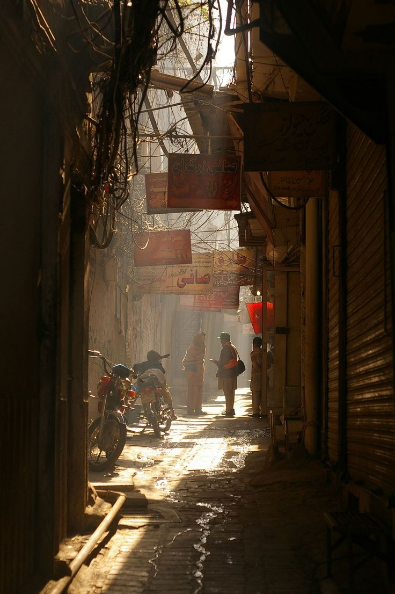
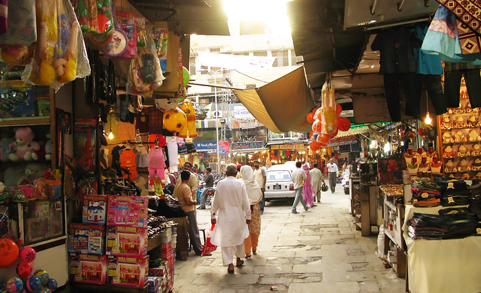

Traffic and people on the move

Small shops along the way
01 / STREET LIFE
The streets are still busy.
Cars and bikes pass, people cross the road, and shops carry on around them. It can get noisy, but that constant movement is part of what makes Lahore feel so alive.
Listen to the soundscape
Traffic, footsteps and passing horns
Choose a scene and press play.